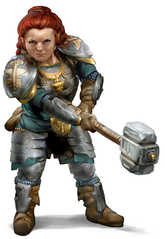

Raza jugable
Enanos
Atrevidos y robustos, los enanos son conocidos por su habilidad como guerreros, mineros y trabajadores de la piedra y los metales. Aunque están bastante por debajo de los 5 pies (1,5 m) de altura, los enanos son tan anchos y compactos que pueden pesar tanto como un humano a pesar de medir un par de pies menos que ellos. Su valentía y aguante también pueden compararse fácilmente con los de la gente alta. La piel de los enanos varía en color desde un marrón profundo hasta un tono más pálido y sonrosado. No obstante, las tonalidades más comunes son el marrón claro y un moreno intenso, parecidos a los colores de la tierra. Su cabello, que llevan largo, pero con peinados sencillos, suele ser negro, gris o marrón, aunque los enanos más pálidos a veces son pelirrojos. Los enanos de género masculino tienen sus barbas en alta estima, y las cuidan y adornan.

Una memoria portentosa, un enorme rencor
Los enanos pueden vivir más de cuatrocientos años y por eso
los más ancianos rememoran un mundo muy diferente al actual.
Por ejemplo, los enanos más ancianos de Ciudadela Felbarr (en
el mundo de los Reinos Olvidados) pueden recordar el día, hace
ya más de tres siglos, en que los orcos conquistaron la fortaleza
y le forzaron a un exilio que duró más de doscientos cincuenta
años. Esta longevidad les da una perspectiva del mundo que las
razas de vida más corta, como los humanos y los medianos, carecen.
Los enanos son firmes y tenaces como las montañas a las
que aman, aguantan el desgaste de los siglos con estoicismo y
sin apenas cambios. Respetan las tradiciones de sus clanes y no
las abandonan sin una buena razón, pues pueden trazar su genealogía
hasta los mismos fundadores de las fortalezas
más antiguas, que habitaban en el mundo cuando este aún era
joven. Parte de estas tradiciones está dedicada a los dioses de
los enanos, que encarnan los ideales del trabajo diligente, la habilidad
en batalla y la devoción a la forja.
Como individuos, son decididos y leales, fieles a la palabra
dada y comprometidos con el curso de acción elegido, rayando
en la tozudez más extrema. Muchos enanos poseen un fuerte
sentido de la justicia y tardan en olvidar las ocasiones en que
han sido tratados injustamente. Si alguien provoca un mal a un
enano se lo hace a todo su clan, así que la causa de la búsqueda
de justicia por parte de un único enano puede acabar convirtiéndose
en fuente de la enemistad de todo un clan.
Clanes y reinos
Los reinos enanos se extienden por las profundidades de las montañas, donde éstos buscan gemas y metales preciosos y forjan objetos maravillosos. Los enanos aman la belleza y el arte intrínsecos a los metales nobles y la joyería delicada, aunque en algunos casos este amor se torna en avaricia. Obtienen mediante el comercio todo aquello que no pueden encontrar en la montaña. No les gustan los barcos, por lo que los humanos y medianos especialmente emprendedores suelen comerciar con bienes enanos siguiendo rutas fluviales o marítimas. Los miembros de otras razas que demuestran ser de confianza son bien recibidos en los asentamientos enanos, aunque ni siquiera a ellos se les permite el paso a algunas zonas. El núcleo de la sociedad enana es el clan, y los miembros de esta raza tienen la posición social en alta estima. Incluso aquellos enanos que viven lejos de sus reinos mantienen la identidad y afiliaciones de su clan, reconocen a otros enanos con relación de parentesco y recurren a los nombres de sus ancestros para jurar y maldecir. Carecer de clan es lo peor que le podría suceder a un enano. Los enanos que viven en otras tierras suelen ser artesanos, en especial herreros, armeros y joyeros. Algunos se convierten en mercenarios o guardaespaldas, y son valorados por su coraje y lealtad.
Dioses, oro y clan
Algunos enanos que parten en aventuras pueden estar motivados por el ansia de tesoros, ya sean estos para su propio disfrute, un propósito específico o incluso un deseo altruista de ayudar a los demás. Otros enanos están impulsados por las órdenes o la inspiración de una deidad, su vocación o el simple deseo de traer gloria a uno de los dioses enanos. El clan y los ancestros también son fuentes de motivación importantes. Un enano podría querer restaurar el honor perdido de su clan, vengar una injusticia sufrida por este o volver a ocupar un lugar entre los suyos tras haber sido exiliado. O quizá esté buscando el hacha que un día portó un poderoso ancestro, perdida en el campo de batalla hace siglos.
Atributos enanos
Tu personaje enano tiene una serie de características innatas, parte indisoluble de la naturaleza de su raza.
Mejora de Característica. Tu puntuación de Constitución
aumenta en 2.
Edad. Los enanos alcanzan la madurez a la misma edad que
los humanos, pero se les considera jóvenes hasta los cincuenta
años. Viven, de media, unos trescientos cincuenta años.
Alineamiento. La mayoría de los enanos son legales, pues
creen firmemente en los beneficios de una sociedad bien estructurada.
Además, también tienden a ser buenos, ya que poseen
un fuerte sentido del juego limpio y creen que todos merecen
compartir los frutos de un orden justo.
Tamaño. Los enanos miden entre 4 y 5 pies de altura y pesan
unas 150 libras de media. Eres de tamaño Mediano.
Velocidad. Tu velocidad caminando base es de 25 pies. Esta
velocidad no se reduce por llevar armadura pesada.
Visión en la Oscuridad. Acostumbrado a la vida bajo tierra,
puedes ver bien en la oscuridad o con poca luz. Eres capaz de
percibir hasta a 60 pies en luz tenue como si hubiera luz brillante,
y esa misma distancia en la oscuridad como si hubiera
luz tenue. Eso sí, no puedes distinguir colores en la oscuridad,
solo tonos de gris.
Resistencia Enana. Tienes ventaja en las tiradas de salvación
contra veneno y posees resistencia al daño de veneno.
Entrenamiento de Combate Enano. Eres competente con
hachas de guerra, hachas de mano, martillos de guerra y martillos
ligeros.
Competencia con Herramientas. Eres competente con las
herramientas de artesano que elijas de entre las siguientes: herramientas
de albañil, herramientas de herrero o suministros de
cervecero.
Afinidad con la Piedra. Cuando hagas una prueba de Inteligencia
(Historia) que tenga relación con el origen de un trabajo
en piedra, se te considerará competente en la habilidad Historia
y añadirás dos veces tu bonificador por competencia a la tirada,
en lugar de solo una.
Idiomas. Puedes hablar, leer y escribir en común y enano. El
idioma enano está lleno de consonantes duras y sonidos guturales,
y estas peculiaridades se traslucen en la forma que tienen
los enanos de pronunciar cualquier otro lenguaje que conozcan.
Subraza. Los mundos de D&D clan cobijo a dos subrazas:
enanos de las colinas y enanos de las montañas. Escoge una de
las dos.
Enano de las colinas
Como enano de las colinas, posees sentidos agudos, una profunda
intuición y una resistencia extraordinaria. Los enanos de
oro de Faerûn, habitantes de un poderoso reino sureño, son
enanos de las colinas, como también lo son los exiliados Neidar
y los corruptos Klar que habitan en Krynn, parte de la ambientación
Dragonlance.
Mejora de Característica. Tu puntuación de Sabiduría aumenta
en 1.
Aguante Enano. Tus puntos de golpe máximos se incrementan
en 1, y aumentarán en 1 más cada vez que subas un nivel.
Enano de las montañas
Como enano de las montañas, eres fuerte y robusto, acostumbrado
a la difícil vida en un terreno agreste. Probablemente seas
alto (para ser un enano) y tiendas a tonos de piel más claros.
Los enanos escudo del norte de Faerûn, así como los clanes Hylar,
el dominante, y Daewar, especialmente noble, ambos de la
ambientación Dragonlance, son enanos de las montañas.
Mejora de Característica. Tu puntuación de Fuerza aumenta
en 2.
Entrenamiento con Armadura Enana. Eres competente
con armaduras ligeras y medias.